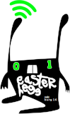
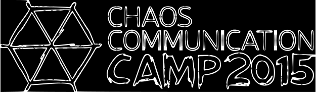

Unsere Events:
Maker Challange
Wir waren auf der Maker Faire Friedrichshafen. Auf dieser Messe fand auch eine CHallange Statt bei der wir mitgemacht haben, die Maker-Challang.
Die Aufgabe war einen Lichtschalter zu drücken der an einer Holzsäule befestigt war. Natürlich nicht von Hand sondern mit etwas Technischem.
Diese Aufgabe war schon vorher bekannt so dass man sich überlegen konnte was man noch alles braucht oder was man überhaupt machen möchte.
Wir haben uns mit 2 Teams angemeldet und das eine hat mit einem Fenstermotor den Schalter gedrückt, der sich nur dann bewegt hat wenn man die richtige Melodie (Tetris) auf einem Keyboard gespielt hat.
Das andere Team von uns hat den Schalter mit Hilfe einer Rohrpost gedrückt. Um diese zu aktivieren musste über den IRC channel see-base auf hackint.org !licht geschrieben werden, dann hat ein Raspberry Pi einen
Staubsauger angemacht, der dann eine Kapsel durch ein Rohr gepustet hat, die dann auf den Schalter geprallt ist und den Ausgelöst hat.
Die preise die es dafür gab sind für uns Ziemlich Ordentlich ausgefallen. Es gab 200€ pro Team dafür, dass man den Schalter gedrückt hat und jeweils noch 100€ für extraleistungen wie sehr Technisch aufwendig oä.
Wir haben insgesammt 700€ abgeräumt, 400€ für das Schalterdrücken und noch jeweils 100€ für das Technisch aufwendigste, den Teamfavoriten und das Kreativste.
Wir waren allerdings auch als freifunker auf der Maker Faire.
Gulasch Programier Nacht

Wir waren auf der GPN.
Die GPN ist typisches CCC event. Sie findet jedes Jahr in Karlsruhe in der Staatliche Hochschule für Gestaltung (ZKM) statt. Du kannst dort Hacken, Gulasch Essen, Vorträge anschauen/hören, Cloud gedöns machen, Tschunk trinken, bei Workshops mitmachen, in der Lounge D$NGE tun, Mate trinken, Spaß am Gerät haben.
Die GPN könnte man als mini Congress bezeichnen, sie macht mindestens genauso viel spaß, vorallem weil man dort mit den Leuten mehr ins gespräch kommen kann.
Easterhegg

Der Easterhegg verändert jedes Jahr seine Position. Er ist immer an einer anderen Position und in einer Anderen Stadt. Dieses Jahr war er in Salzburg in der ARGEkultur. Auf dem Easterhegg kannst du in Vorträge gehen, Workshops besuchen, Spiele Spielen, Mate oder Tschunk trinken und Kekse und/oder Brödchen Essen. Ausserdem kannst du wie auf jedem CCC event Coole Menschinnen treffen und mit ihnen D$NGE tun.
Sehr gut war z.B. der Fiber splicing Workshop, wo man wie der name schon erwähnt Glasphaserleitungen Splicen kann, und mehr darüber erfahren kann.
Es macht immer wieder Spaß auf den Easterhegg zu gehen und ist nur weiter zu emfehlen.
Chaos Communication Congress

Der letzte Chaos Communication Congress war der 32C3. Also der 32. Congress. Der CCC findet jedes jahr in Hamburg im zzh statt. Das zzh ist das größte Congresszentrum in Deutschland und es ist mitlerweile zu klein für den CCC, letztes Jahr waren um die 10.000 Menschinnen da.
Auf dem CCC kannst du in Vorträge gehen, Workshops besuchen, Hack-Spiele Spielen, deine Ideen anfangen zu verwirklichen und natürlich andere Menschen kennen lernen.
Der Congress ist eines der tollsten CCC events. Weil er so groß ist und alle Menschinnen dort sich an die übliche Hacker-Ethik halten. Die Atmosphäre dort ist der hammer, du kommst mit allen dort klar und es gibt so viele Coolen Maschienen die man dort anschauen, Bauen, und Kennenlernen kann. Es gibt z.B. eine Hunderte von Metern lange Roohrpost, verschiedennne Roboter, Stickmaschienen, Spielautomaten, und natürlich verschiedenne Drucker (natürlich 2 und 3D). Man kann jedem der sich für die Hacker-Szene interresiert nur empfehlen dort mal hin zu gehen.
Chaos Communication Camp

Das Chaos Communikation Camp findet alle 4 Jahre statt. Es ist wie der Congress eines der besten CCC events überhaupt. Man kann dort so viele coole D$NGE tun.
Auf dem CCCamp haben wir so zu sagen die see-base gegründet. Wir hatten dort unsere eigenne kleine Assembly (Beach City), mit den Leuten aus unserer umgebung die auch in der CCC Szene stecken. Weil uns allen das so viel spaß gemacht hat wollten wir schnell unseren eigennen Space gründen, und das haben wir dann auch gemacht.
Es ist eigentlich auf jedem CCC event so, dass man inspiriert wird selber D$NGE zu tun.